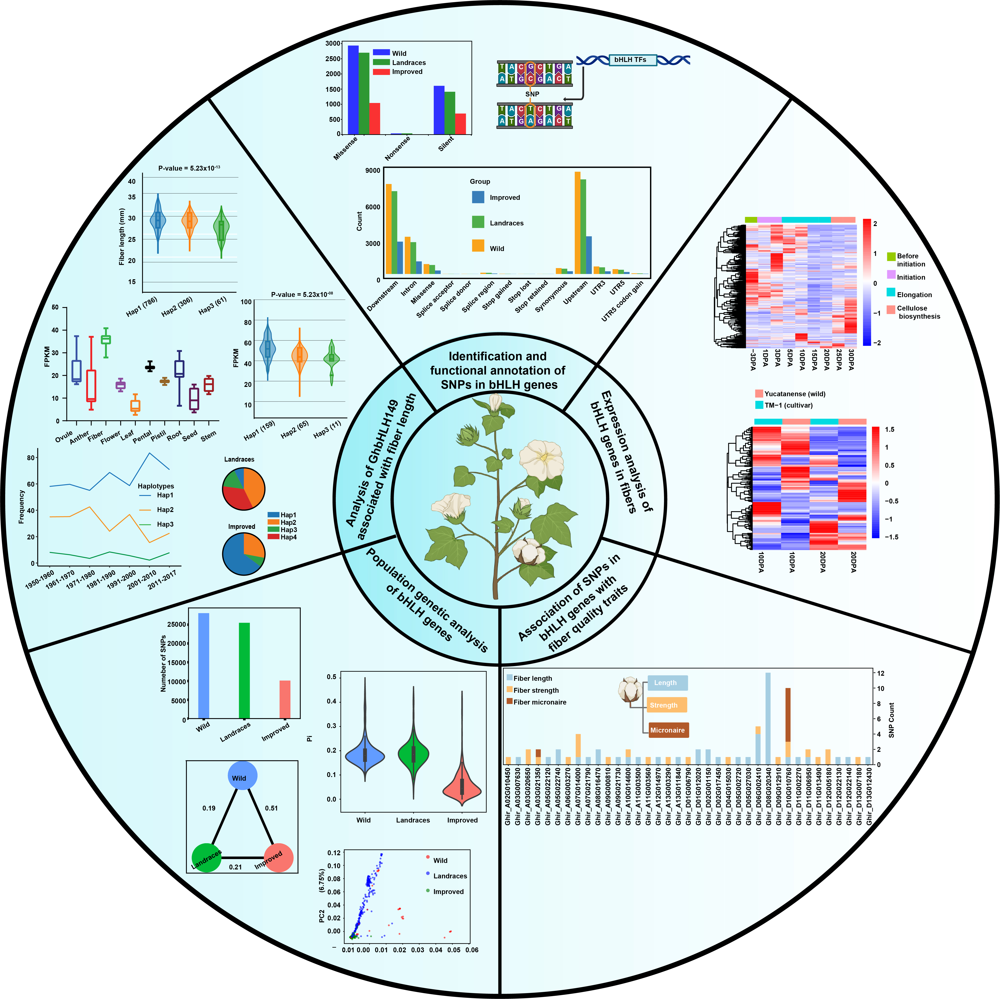

Ph.D. in Biochemistry and Molecular Biology
Dec 2023
Chinese Academy of Agricultural Sciences, Beijing, China
Mubashir Abbas, Ph.D.
Plant Genomics | Computational Biology | Multi-Omics Integration
Professional Summary
Highly skilled plant genomics and computational biology researcher with extensive experience in multi-omics integration, genome-wide association studies (GWAS), and bioinformatics pipeline development. Demonstrated expertise in uncovering genetic mechanisms of abiotic and biotic stress tolerance in plants through advanced genomic and computational approaches.
Research Highlights
bHLH Genes in Cotton
Genetic Diversity & Functional SignificanceWe performed a comprehensive genome-wide analysis of the Basic Helix-Loop-Helix (bHLH) transcription factor family in cotton. This study revealed key candidate genes involved in fiber development and elucidated their evolutionary divergence and functional roles.
Methods: Genome-wide Identification, Phylogenetic Analysis
Journal: Industrial Crops and Products, 2024

Fig 1. Analysis of bHLH genes in cotton fiber development.
Education
Research Experience
Postdoctoral Research Fellow
Jan 2024 – Nov 2025
Cotton Research Institute, CAAS, Anyang, China
- Integrated population genetics, transcriptomics, and transposable element analysis to study gossypol biosynthesis.
- Investigated regulatory roles of microRNAs in gossypol gland formation in cotton seeds.
- Developed computational pipelines for multi-omics data integration.
Graduate Research Assistant
Mar 2019 – Dec 2023
Biotechnology Research Institute, CAAS, Beijing, China
- Conducted GWAS to identify genetic loci associated with root system architecture under stress.
- Collaborated on projects integrating phenomics, genomics, and transcriptomics.
Technical Skills
Programming
Bash, R, Python, Perl, JavaScript
Genomics
GWAS, Variant Calling (GATK), Assembly
NGS Analysis
RNA-seq, DNA-seq, HISAT2, Bowtie2
Publications
I have published extensively in high-impact journals including Physiologia Plantarum, Industrial Crops and Products, and BMC Plant Biology. For a complete and up-to-date list of my citations and research metrics, please visit my Google Scholar profile.
View Google Scholar Profile ➞